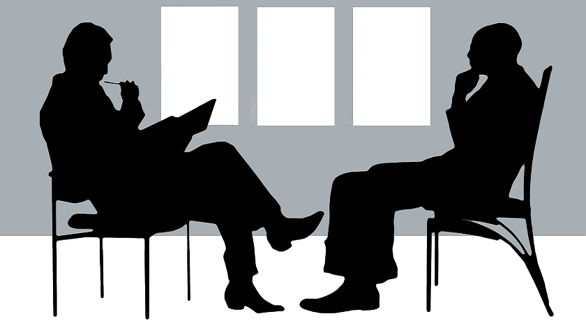

Sobre Mí
Hola, soy Lucas creador y parte del equipo de Psico & Calm. Mi enfoque se basa en brindar un espacio de escucha activa y empatía, donde cada consultante pueda explorar sus emociones sin juicios.
Cuento con formación especializada en clínica de adultos y herramientas de tercera generación, buscando siempre una terapia adaptada a la singularidad de cada persona.
Psicólogo Clínico
Esp. en Ansiedad
Terapeuta Sexual
Mi Metodología de Trabajo
Empatía
Entiendo tu proceso desde tu lugar, validando cada una de tus experiencias.
Confidencialidad
Un espacio seguro y privado bajo estricto secreto profesional.
Evidencia
Utilizo herramientas respaldadas científicamente para tu bienestar.